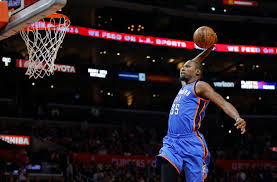

Kevin Wayne Durant (born September 29, 1988) is an American professional basketball player for the Golden State Warriors of the National Basketball Association (NBA). He has won an NBA championship, an NBA Most Valuable Player Award, the Bill Russell NBA Finals Most Valuable Player Award, the NBA All-Star Game Most Valuable Player Award, four NBA scoring titles, the NBA Rookie of the Year Award, and two Olympic gold medals. Durant has also been selected to seven All-NBA teams and nine NBA All-Star teams
Durant was a heavily recruited high school prospect who was widely regarded as the second-best player in his class. He played one season of college basketball for the University of Texas, where he won numerous year-end awards and became the first freshman to be named Naismith College Player of the Year. In 2007, he was selected as the second overall pick by the Seattle SuperSonics in the NBA draft. After his rookie season, the team relocated to Oklahoma City and became the Thunder. Behind Durant's leadership and his pairing with All-Star guard Russell Westbrook, the Thunder emerged as a perennial title contender, advancing as far as the NBA Finals in 2012, where they lost to the Miami Heat. He played nine seasons in Oklahoma City before signing with Golden State in 2016, winning a championship in his debut season.
OKC time
